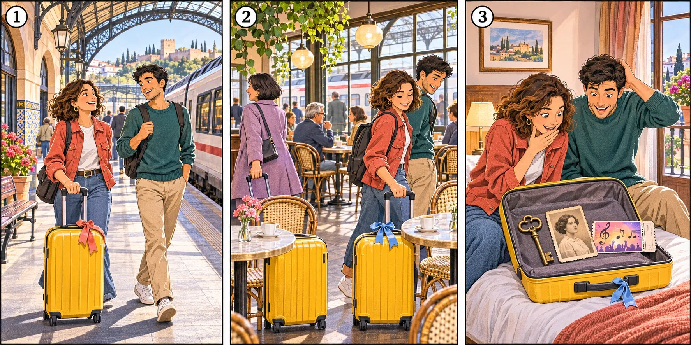

Fiilleri hatırla, cümleleri birbirine bağla, kendi hikâyeni kur. 🌸
01 · TODO EN UNA PÁGINA
Indefinido’ya tek bakışta dön.
Önce fiilin grubunu belirle, sonra kişiye göre çek. Altı kişilik tablo için fiil adına tıklayabilirsin.
Tamamlanmış olaylar
ayer · anoche · el año pasado · en 2020 · hace dos días Belirli bir geçmiş olay, bitmiş bir dönem, tamamlanmış bir süre veya art arda gerçekleşen olaylar.
1 · Düzenli fiiller
KİŞİ
-AR
-ER / -IR
ÖRNEK
yo
-é
-í
hablé · comí · viví
tú
-aste
-iste
hablaste · comiste · viviste
él / ella / usted
-ó
-ió
habló · comió · vivió
nosotros/as
-amos
-imos
hablamos · comimos · vivimos
vosotros/as
-asteis
-isteis
hablasteis · comisteis · vivisteis
ellos / ellas / ustedes
-aron
-ieron
hablaron · comieron · vivieron
-AR ve -IR fiillerinin nosotros biçimleri presente ile aynı yazılabilir; zamanı bağlam belirler: Ayer hablamos. Hoy hablamos.
-ñir / -llir: üçüncü kişilerde son ekteki i yazılmaz: gruñó / gruñeron; zambulló / zambulleron.
02 · ESCRIBIR PARA COMUNICAR
Okuyucu hikâyeni rahatça takip edebilsin.
Ne anlatacağını belirle, olayları düzenle ve okuyucuya aralarındaki bağı göster. Son okumada dilini kontrol et.
DELE A2 · RESMÎ DEĞERLENDİRME ALANI
Uso de la lengua
Düşünceni uygun kelimeler ve yapılarla aktar. Cümleleri birbirine bağla; fiil çekimleri, uyum, yazım ve noktalama üzerinde çalış.
DELE A2 · RESMÎ DEĞERLENDİRME ALANI
Cumplimiento de la tarea
İstenen duruma uygun bir metin yaz. Yönergedeki noktaları karşıla; ilgili açıklama, neden ve ayrıntılarla mesajını tamamla.
🧭 Yazını geliştirmek için kontrol başlıkları
Bu başlıklar, resmî iki değerlendirme alanını yazarken kullanabileceğin sorulara dönüştürür.
Görev ve amaç
Ne anlatmam isteniyor? Kim okuyacak? İstenen noktaları anlaşılır biçimde ele aldım mı?
Akış ve düzen
Olaylar hangi sırayla oldu? Paragraflarımın her biri hikâyeye bir şey ekliyor mu? Başlangıçtan sona geçiş takip edilebiliyor mu?
Bağlantılar
Zamanı, nedeni, sonucu ve karşıtlığı uygun bağlaçlarla gösterdim mi? Aynı bağlacı gereksiz yere tekrarlıyor muyum?
İfade gücü
“Bir şey oldu” demek yerine kimin ne yaptığını, nasıl tepki verdiğini ve bunun sonucunu açıklayabiliyor muyum?
Hayal gücü ve tutarlılık
Eklediğim ayrıntılar olaylarla ilişkili mi? Karakterlerimin seçimleri anlaşılır mı? Başta verdiğim ipucunu sonda kullanabiliyor muyum?
Dil kontrolü
Özneye uygun Indefinido çekimini, tildeleri, isim–sıfat uyumunu ve noktalama işaretlerini kontrol ettim mi?
🌱 Öncelik: anlaşılır bir mesaj. A2’de bazı temel hatalar yapılabilir; önemli olan bu hataların mesajı anlaşılmaz hâle getirmemesidir. Hayal gücünü, görevi ilgili ve tutarlı ayrıntılarla geliştirmek için kullan. DELE A2 ölçeği esas alınmıştır. Instituto Cervantes ↗
Zaman sırası, karşıtlık ve sonuç ilişkisi açıkça görülüyor. Cümlelerin üzerine gelerek öbekleri; kelimelere tıklayarak anlamlarını inceleyebilirsin.
🔗 Bağlaç ve anlatım kutusu
Anlatmak istediğin ilişkiye göre seç. Bir ifadeye tıklayınca anlamı ve örneği açılır.
Son okuma: olay sırası → bağlantılar → kişi ekleri → tildeler.
03 · ESCRITURA EN GRUPO
La maleta equivocada
Bu yolculukta ne oldu? Çantanın içindeki ipuçları kahramanları nereye götürdü? Görselden yola çıkıp geçmişte gerçekleşen olayları Indefinido odağında anlatan ortak bir hikâye yazın. Sonunu siz belirleyin.

Bir yolculuk, karışan çantalar ve üç ipucu. Final sizin hayal gücünüzde.
01 · YolculukKimler, ne zaman, nereye ve neden gitti?
02 · KarışıklıkÇantalar nasıl karıştı? Kim ne yaptı?
03 · Keşifİpuçları ne anlama geldi? Sonra ne oldu?